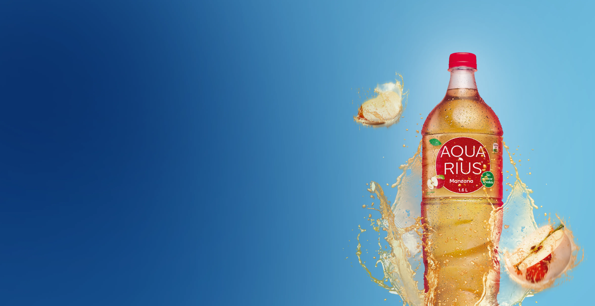
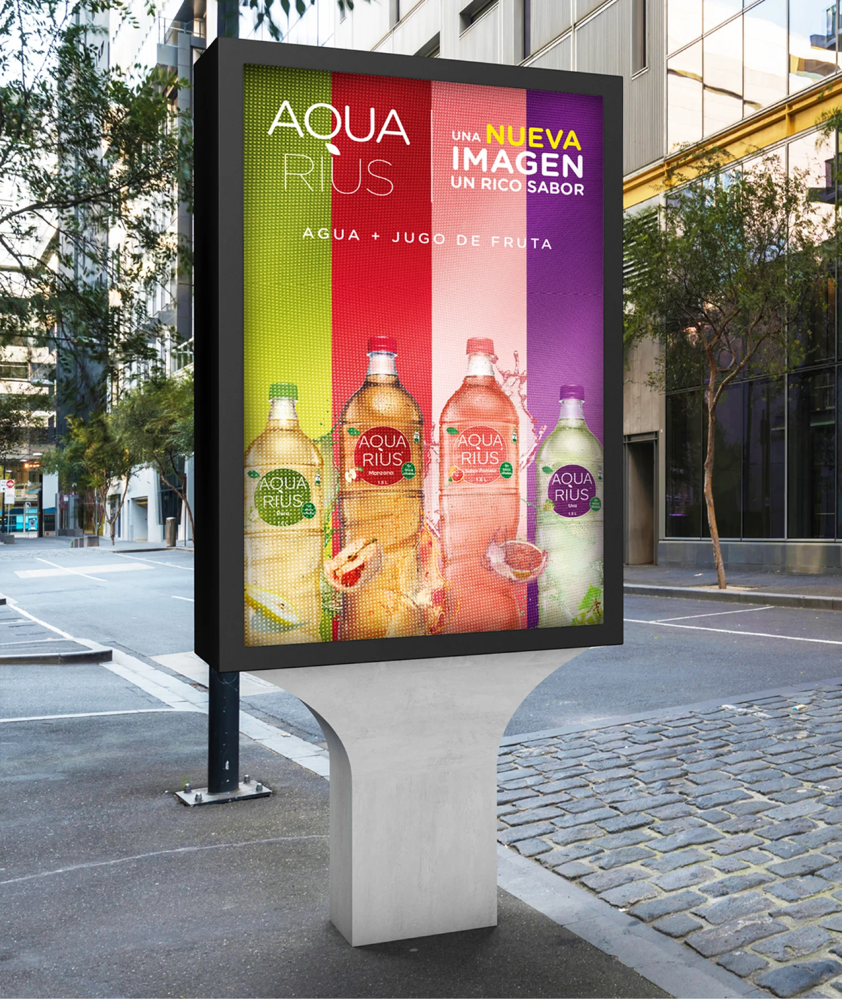
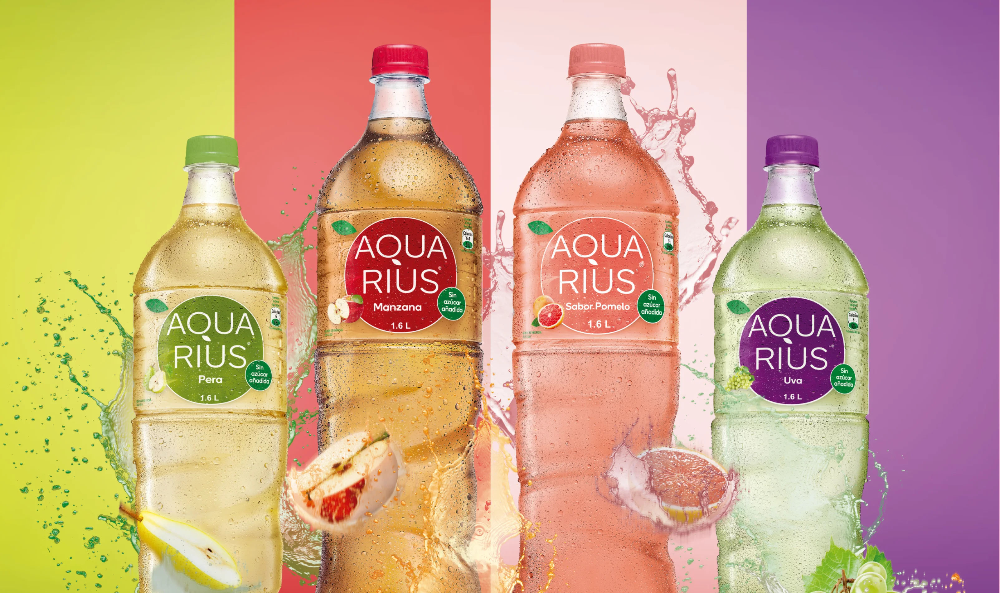
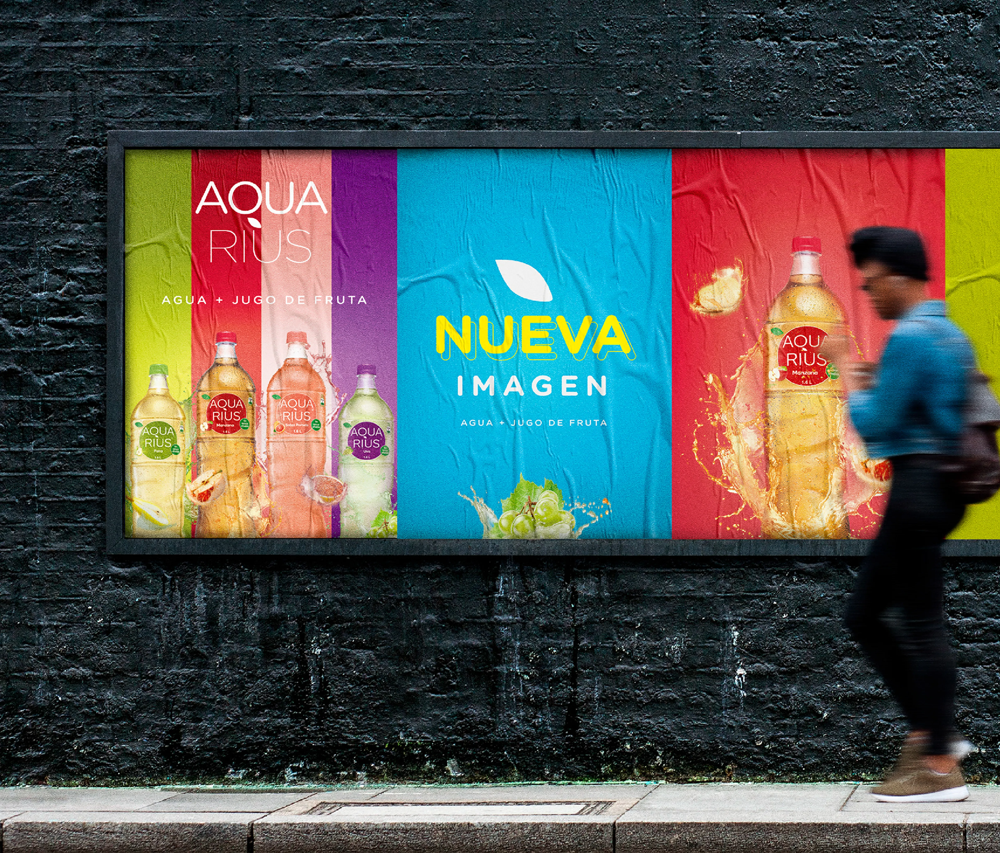
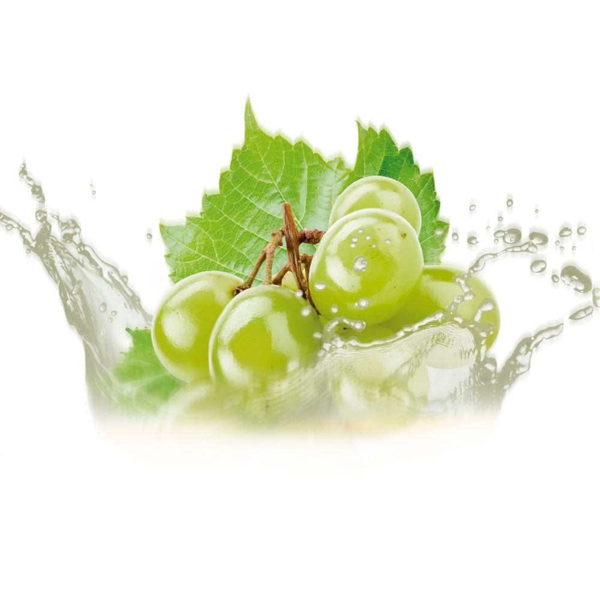
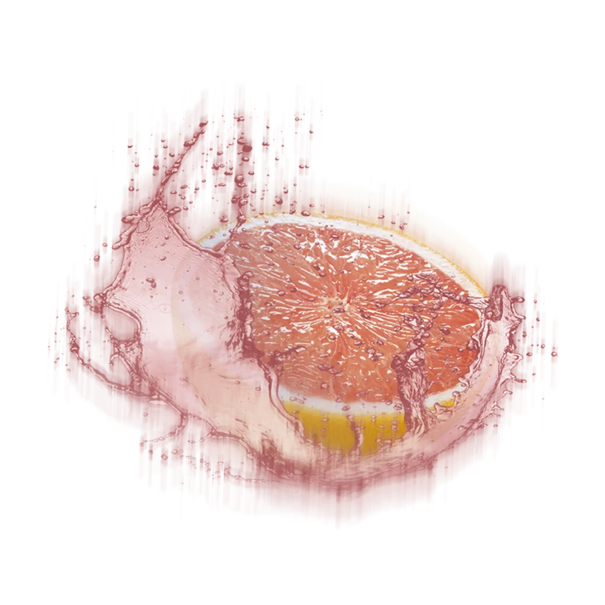
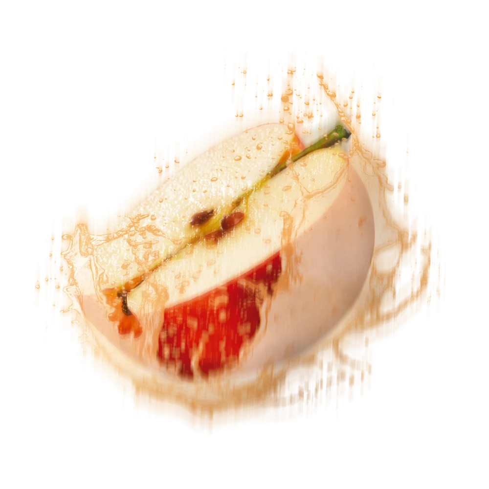
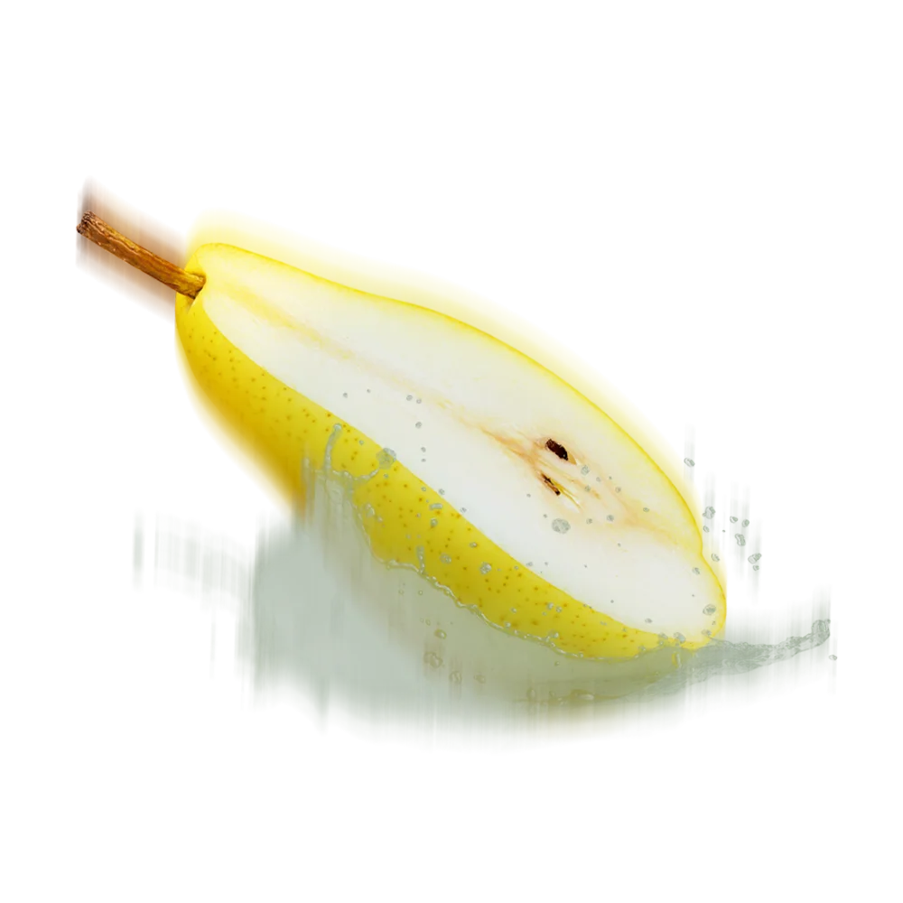
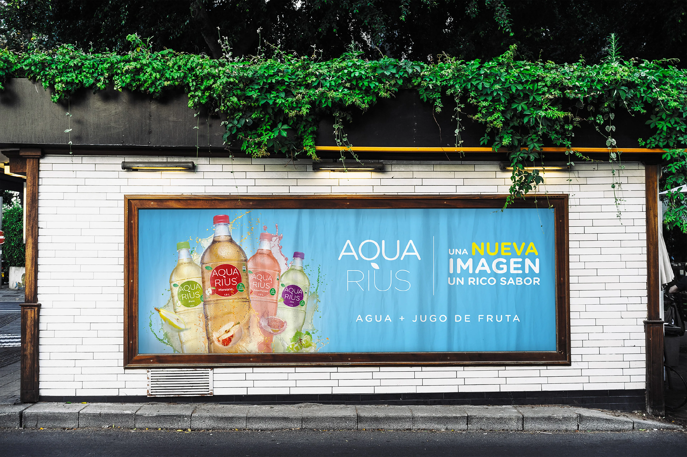

The Bottlexam
Case study · propuesta contra el cáncer de mama para Vital
Dirección de arte

Key visual · Dirección de arte
Lanzamiento de la nueva imagen de Aquarius (agua + jugo de fruta) en punto de venta y vía pública. El KV se construyó desde cero sobre tres atributos de marca (sabor, frutas, frescura) y un sistema de color donde cada sabor tiene su propio fondo.
Aquarius renovaba su propuesta: agua con jugo de fruta real, en cinco sabores. El KV tenía que transmitir los tres atributos de la marca —sabor, frutas y frescura— y a la vez funcionar como sistema para toda la bajada a trade y vía pública, con una lectura clara desde el shopper.


Armé el KV desde cero a partir de sabor, frutas y frescura. Cada sabor recibió su propio fondo de color —azul para Agua, rojo para Manzana, rosa para Pomelo, morado para Uva y verde lima para Pera— acompañado de salpicaduras de fruta, texturas y gotas de condensación para reforzar la frescura.
El retoque y la composición de las botellas se trabajaron para que el producto quedara siempre al centro, y el sistema se adaptó a trade y vía pública con el claim "Nueva imagen · Agua + jugo de fruta".






Compañía GREY Chile
Directora de Arte Erika Pinedo
- Todos los derechos reservados -